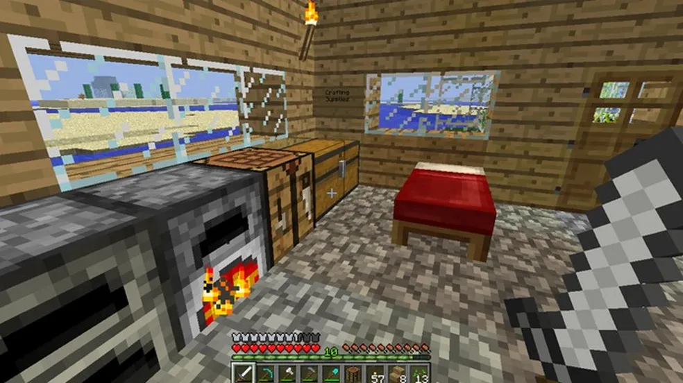
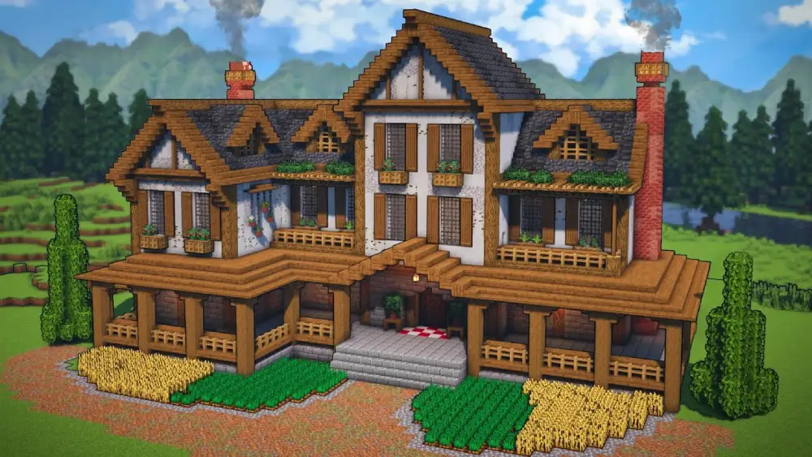
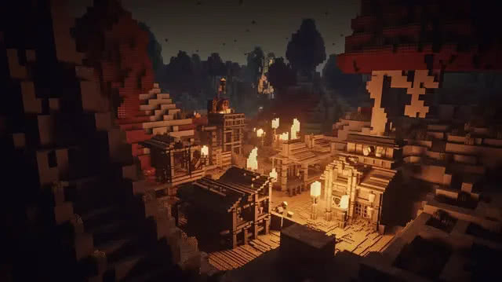

Minecraft
Minecraft é um jogo eletrônico de mundo aberto que permite aos jogadores explorar, construir e modificar ambientes formados por blocos. Uma de suas principais características é a liberdade: cada jogador pode escolher seus próprios objetivos, desde construir casas e cidades até explorar cavernas, enfrentar criaturas e descobrir novas regiões.
O jogo possui diferentes recursos, ferramentas, animais, criaturas e materiais que podem ser encontrados durante a exploração. Essa variedade faz com que cada partida possa apresentar experiências diferentes, incentivando a criatividade, o planejamento e a descoberta.
Sobre o Jogo
História
O Minecraft começou como um projeto experimental de Markus "Notch" Persson em 2009. Inspirado por jogos de mineração e estratégia, Notch desenvolveu a primeira versão em poucos dias. O projeto chamou a atenção dos jogadores por apresentar um estilo diferente, no qual era possível construir estruturas e transformar o cenário usando blocos.
Com o crescimento da comunidade, o jogo recebeu novas versões e atualizações. Em 2011, sua versão completa foi lançada pela Mojang. Em 2014, a Microsoft adquiriu a Mojang e os direitos da franquia. Desde então, Minecraft continuou recebendo melhorias, novos conteúdos e versões para diferentes plataformas.
Ao longo dos anos, a comunidade também teve grande participação no crescimento do jogo. Jogadores passaram a compartilhar construções, mapas, desafios e modificações, criando novas maneiras de aproveitar o universo de Minecraft.
Um Mundo Infinito
Cada mundo de Minecraft é gerado de maneira própria, apresentando paisagens e características variadas. O mapa é dividido em partes chamadas "chunks", que são carregadas conforme o jogador explora o ambiente. Isso permite a criação de grandes áreas para exploração e construção.
Entre os biomas encontrados estão florestas, desertos, planícies, montanhas, oceanos e regiões congeladas. Cada bioma possui elementos específicos, como tipos de vegetação, animais, recursos e estruturas. Por isso, explorar diferentes regiões é importante para encontrar materiais e conhecer melhor o mundo.
Além do mundo principal, existem outras dimensões, como o Nether e o The End. Esses lugares apresentam ambientes, recursos e desafios próprios, ampliando as possibilidades de exploração e aventura.
Modos de Jogo

Modo Sobrevivência
Minecraft oferece diferentes modos de jogo. No modo Sobrevivência, o jogador precisa coletar recursos, fabricar ferramentas, conseguir alimentos e se proteger dos perigos do ambiente. A exploração e o planejamento são importantes para avançar.

Modo Criativo
No modo Criativo, os jogadores têm liberdade para construir sem precisar reunir materiais ou se preocupar com os perigos comuns do modo Sobrevivência. Esse modo é bastante utilizado para criar casas, cidades, máquinas, monumentos e projetos de grande escala.

Modo Multijogador
Também é possível jogar com outras pessoas em mundos compartilhados e servidores. O modo multijogador permite desenvolver construções em equipe, participar de desafios e compartilhar experiências com amigos.
Educação e Criatividade
Minecraft também pode ser utilizado em atividades educativas. A construção de estruturas ajuda a trabalhar conceitos de espaço, medidas, organização e planejamento. Projetos coletivos podem estimular a comunicação, a cooperação e a divisão de tarefas.
Alguns elementos do jogo, como a redstone, permitem criar mecanismos e circuitos simples, aproximando os jogadores de conceitos de lógica e automação. A liberdade para testar ideias e encontrar soluções também incentiva a criatividade e a resolução de problemas.
Fale Conosco
Você tem alguma dúvida sobre as mecânicas do jogo, deseja sugerir novas ideias ou encontrou algum problema relacionado ao conteúdo desta página? Utilize o formulário abaixo para enviar sua mensagem.
Para facilitar o atendimento, informe seus dados corretamente e escolha o assunto que melhor representa sua solicitação. No campo de mensagem, descreva sua dúvida, sugestão ou problema com o máximo de clareza possível.